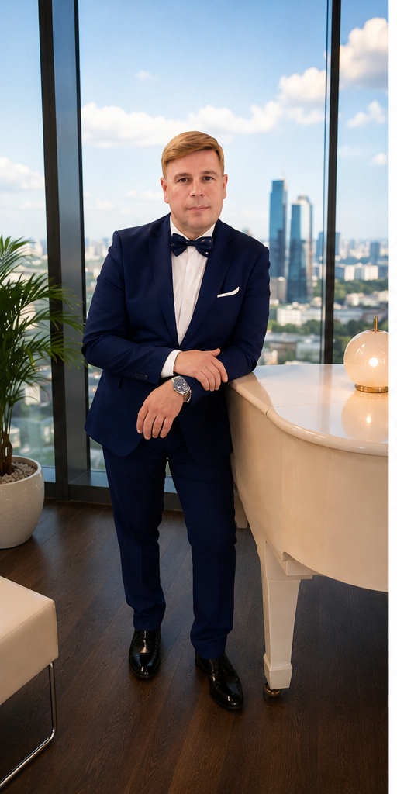
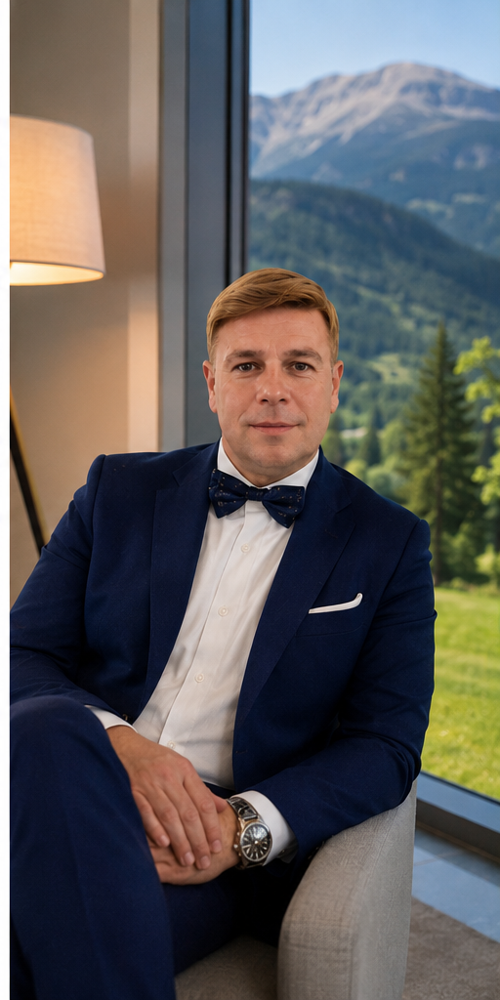

Academy
Formazione, crescita e sviluppo di nuove competenze. Ogni esperienza rappresenta un passo importante verso una maggiore consapevolezza personale e professionale.
Esperienze, incontri e momenti di formazione che raccontano il mio percorso. Occasioni per crescere, confrontarsi, condividere idee e costruire nuove direzioni personali e professionali.
Formazione, crescita e sviluppo di nuove competenze. Ogni esperienza rappresenta un passo importante verso una maggiore consapevolezza personale e professionale.

Incontri dedicati al confronto, alla condivisione e alla costruzione di relazioni autentiche. Le idee acquistano valore quando vengono condivise con le persone giuste.

Momenti di energia, partecipazione e ispirazione. Esperienze che lasciano un segno e aiutano a guardare con maggiore chiarezza verso il futuro.
Ogni incontro può accendere una nuova idea. Ogni esperienza può diventare l'inizio di un cambiamento.
— Roberto Fattore · Ogni passo lascia il tuo segno.